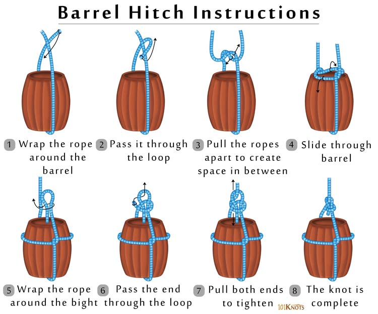

Barrel Hitch
The barrel hitch has been used in sailing and construction work for centuries. It allows you to secure a bucket, barrel or other cylindrical object to lift it in a well-balanced position.
How to tie a barrel hitch:
Place your barrel or other object to be lifted on top of your rope. Then tie an overhand knot across the top of the barrel. Open up the overhand knot until it wraps around the top sides of the barrel. Tie the ends of the rope together with a square knot and then then lift. This knot makes a fine bucket handle when the wire handle finally breaks off.
Safety warning: For safety and stability while hoisting barrels, the rope around the barrel needs to be high above the center of gravity on the barrel, but pose no danger of slipping off the top of the barrel. FYI, beer has an excellent center of gravity.
